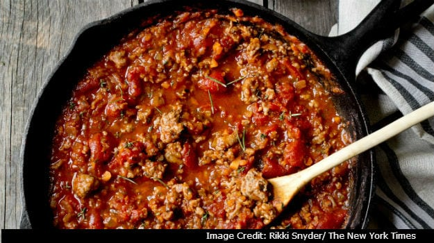

Bolognese

description
Perfect for lasagne or tagliatelle dish
Ingridients
- 45 ml extra virgin olive oil
- 25g butter
- 1 x onion, finely chopped
- 1 x celery stalk, finely chopped
- 1 x carrot, finely chopped
- 150g pancetta, cubed
- 200g minced beef
- 200g minced pork
- 200 ml red wine
- 2 x tablespoons double-concentrated tomato puree
- 200 ml stock
Steps
- Heat the extra virgin olive oil and butter in a pan
- dd the onion, celery, carrot and pancetta and sweat
- Add the meat and brown all over.
- Increase the heat, add the wine and allow to evaporate
- Dilute the tomato puree in a little of the stock and stir into the meat.
- Reduce the heat to low, cover with a lid and cook on a gentle heat for 2 hours, checking and adding a little extra stock from time to time to avoid the sauce from drying out.